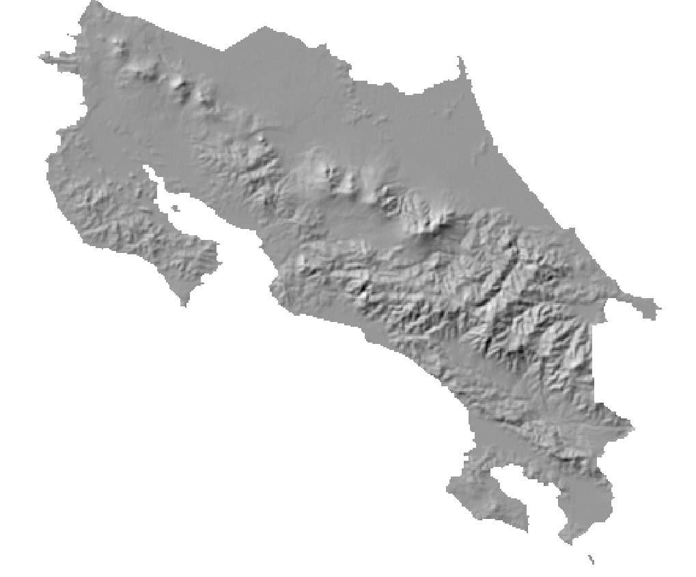
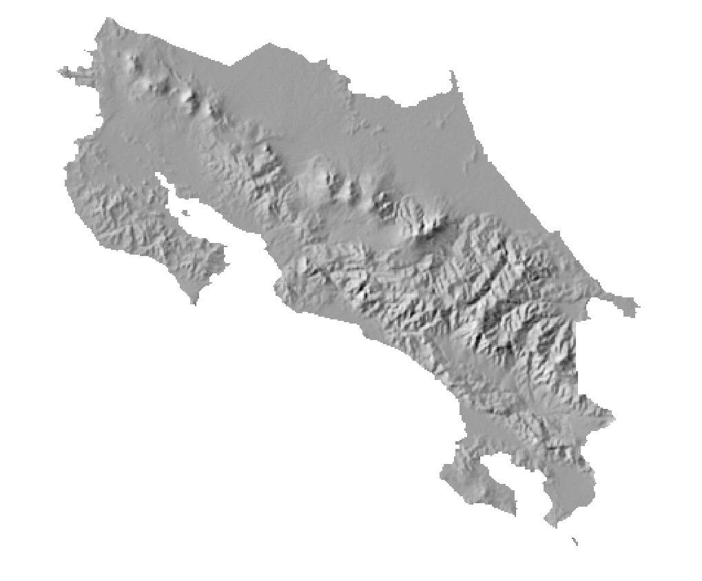
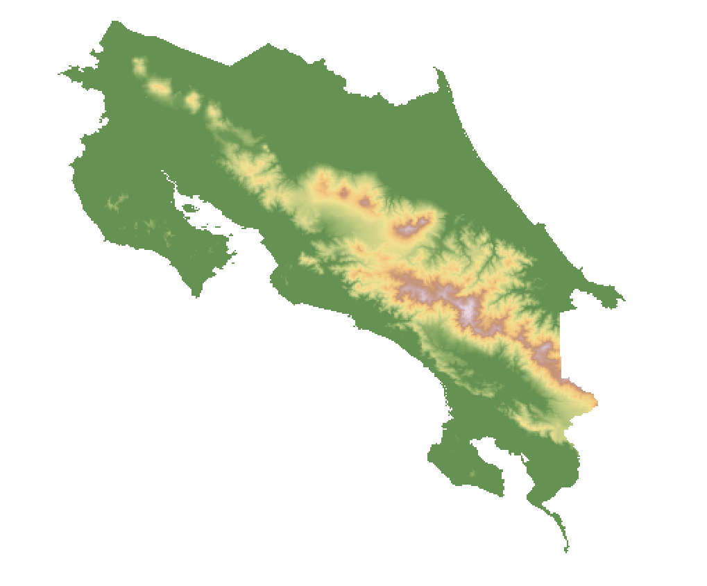

3 GDAL - biblioteca para lectura y escritura de datos geoespaciales con interfaz de línea de comandos
3.1 Resumen
Geospatial Data Abstraction Library (GDAL) es una biblioteca, desarrollada en C/C++, para la escritura y lectura de datos geoespaciales, tanto raster como vectoriales. Ha sido traducida a otros lenguajes de programación como Java, Python y R. Es utilizada en una gran cantidad de aplicaciones de escritorio, aplicaciones web y bibliotecas para programación. Además, incluye un conjunto de programas que pueden ejecutarse desde la línea de comandos de varios sistemas operativos.
GDAL implementa un único modelo abstracto de datos raster y un único modelo abstracto de datos vectoriales, lo que permite programar aplicaciones geoespaciales sin tener que ocuparse de las particularidades de cada formato (GeoTIFF, NetCDF, ESRI Shapefile, GeoPackage, GeoJSON, GeoParquet, WMS, WFS, etc.).
3.2 Trabajo previo
3.2.1 Lecturas
Pebesma, E., Wagner, W., Verbesselt, J., Goor, E., Briese, C., & Neteler, M. (2016). OpenEO: a GDAL for Earth Observation Analytics. https://r-spatial.org/2016/11/29/openeo.html
3.2.2 Tutoriales
Gandhi, U. (2020). Mastering GDAL Tools. Spatial Thoughts. https://spatialthoughts.com/courses/mastering-gdal-tools/
3.3 Introducción
Geospatial Data Abstraction Library (GDAL) es una biblioteca para leer y escribir datos geoespaciales en formatos raster y vectoriales. GDAL implementa, entre otras capacidades:
- Conversiones entre formatos.
- Reproyecciones entre sistemas de coordenadas.
- Consultas no espaciales (i.e. en atributos numéricos y textuales).
- Consultas espaciales (cercanía, adyacencia, contención, intersección, etc.).
- Filtrado y agrupación de datos.
- Verificación y corrección de geometrías.
El manejo de datos vectoriales se implementa en la biblioteca asociada OGR (sigla antes usada para OpenGIS Simple Features Reference Implementation), cuyo código fuente se distribuye conjuntamente con el de GDAL. Por este motivo, a GDAL también se le conoce como GDAL/OGR, en donde GDAL se refiere a la funcionalidad para datos raster y OGR a la funcionalidad para datos vectoriales. En este documento, se utiliza la sigla GDAL para referirse a ambas bibliotecas.
GDAL utiliza un único modelo abstracto de datos raster y un único modelo abstracto de datos vectoriales, lo que permite programar aplicaciones geoespaciales sin tener que ocuparse de las particularidades de cada formato (GeoTIFF, NetCDF, ESRI Shapefile, GeoPackage, GeoJSON, GeoParquet, WMS, WFS, etc.).
A pesar de que GDAL está programada en los lenguajes C y C++, cuenta con una interfaz de programación de aplicaciones (API, en inglés, Application Programming Interface) para varios lenguajes de programación incluyendo, además de C y C++, Python, Java y otros. En R, paquetes como sf y terra utilizan el código fuente que comparte GDAL. En esta lista de sofware puede apreciarse la gran cantidad de aplicaciones de escritorio, aplicaciones web y bibliotecas para programación que aprovechan la funcionalidad de GDAL.
Además, GDAL incluye un conjunto de programas para la línea de comandos del sistema operativo cuyas distribuciones binarias están disponibles para varios sistemas operativos, incluyendo Windows, macOS y Linux. Estas API y los programas también están incluídos en la plataforma de ciencia de datos Anaconda, la cual puede instalarse en todos los sistemas operativos mencionados.
GDAL es distribuida por la Open Source Geospatial Foundation (OSGeo) con una licencia X/MIT.
3.4 Programas para la línea de comandos del sistema operativo
Los programas de GDAL para la línea de comandos del sistema operativo permiten ejecutar tareas de geoprocesamiento y de conversión entre formatos geoespaciales sin utilizar una interfaz gráfica o un lenguaje de programación. Seguidamente, se listan algunos de estos programas.
Programas para datos raster
- gdalinfo: despliega información sobre un conjunto de datos raster.
- gdaldem: herramientas para visualizar y analizar modelos digitales de elevación.
- gdal_translate: realiza conversiones entre formatos raster.
- gdalwarp: reproyecta datos raster y realiza otras conversiones.
- gdal_calc.py: calculadora de álgebra raster.
Programas para datos vectoriales
- ogrinfo: despliega información sobre un conjunto de datos vectorial.
- ogr2ogr: realiza conversiones en conjuntos de datos vectoriales (ej. filtros, reproyecciones).
- ogrmerge.py: une varios conjuntos de datos raster en uno solo.
- ogr_layer_algebra.py: realiza operaciones de álgebra vectorial.
Los programas se ejecutan escribiendo el nombre del programa y un conjunto de opciones que especifican, entre otros aspectos, la ubicación de los datos de entrada, de salida y las transformaciones a realizar. Por ejemplo, el siguiente comando convierte un archivo en formato ESRI Shapefile a GeoJSON y lo reproyecta de CRTM05 a WGS84:
ogrinfo -s_srs EPSG:5367 -t_srs EPSG:4326 provincias.geojson provincias.shp3.4.1 Comandos básicos del sistema operativo
La siguiente lista presenta algunos comandos básicos de sistemas operativos.
3.4.1.1 Windows
| Comando | Descripción | Ejemplos |
|---|---|---|
dir
|
Listado de contenidos de un directorio |
dirdir /wdir /p
|
cd
|
Cambio de directorio |
cd gf0604\ejemplos-gdalcd c:\gf0604\ejemplos-gdal
|
cd ..
|
Cambio al directorio padre |
cd ..
|
cd \
|
Cambio al directorio raíz |
cd \
|
mkdir
|
Creación de un directorio |
mkdir mi-directorio
|
rmdir
|
Borrado de un directorio |
rmdir /s mi-directorio
|
type
|
Despliegue de los contenidos de un archivo de texto |
type mi-archivo.txt
|
del
|
Borrado de un archivo |
del mi-archivo.txt
|
> salida.txt
|
Redireccionamiento de la salida |
dir /b > directorio.txt
|
cls
|
Borrado de la pantalla |
cls
|
3.4.2 Instalación
En el sitio web de GDAL se describen varias opciones para la descarga e instalación de los programas para la línea de comandos del sistema operativo, incluyendo archivos binarios ejecutables para varias plataformas.
En el caso del sistema operativo Windows, estos programas se incluyen en la aplicación OSGeo4W, la cual puede instalarse junto con el sistema de información geográfica de escritorio QGIS. Se recomienda usar el instalador de red OSGeo4W. Una vez finalizada la instalación, verifique que cuenta con la aplicación OSGeo4W Shell para ejecutar los programas desde la línea de comandos del sistema operativo.
3.4.3 Opciones comunes
Los programas de GDAL comparten una serie de opciones comunes para datos raster y de opciones comunes para datos vectoriales que pueden visualizarse con la opción -- help-general. Por ejemplo:
ogrinfo --help-generalGeneric GDAL utility command options:
--version: report version of GDAL in use.
--license: report GDAL license info.
--formats: report all configured format drivers.
--format [format]: details of one format.
--optfile filename: expand an option file into the argument list.
--config key value: set system configuration option.
--debug [on/off/value]: set debug level.
--pause: wait for user input, time to attach debugger
--locale [locale]: install locale for debugging (i.e. en_US.UTF-8)
--help-general: report detailed help on general options.Para obtener ayuda acerca de un comando particular, puede usarse la opción -- help. Por ejemplo:
ogrinfo --helpUsage: ogrinfo [--help-general] [-ro] [-q] [-where restricted_where|@filename]
[-spat xmin ymin xmax ymax] [-geomfield field] [-fid fid]
[-sql statement|@filename] [-dialect sql_dialect] [-al] [-rl] [-so] [-fields={YES/NO}]
[-geom={YES/NO/SUMMARY}] [[-oo NAME=VALUE] ...]
[-nomd] [-listmdd] [-mdd domain|`all`]*
[-nocount] [-noextent] [-nogeomtype] [-wkt_format WKT1|WKT2|...]
[-fielddomain name]
datasource_name [layer [layer ...]]3.4.4 Ejemplos de uso
En esta sección, se presentan ejemplos de uso de los programas, tanto para datos vectoriales como para datos raster.
3.4.4.1 Programas para datos vectoriales
3.4.4.1.1 ogrinfo
El programa ogrinfo despliega información acerca de una fuente de datos vectoriales.
Los siguientes comandos despliegan información sobre la capa de países de Natural Earth, tanto para el formato comprimido (ZIP) como para el formato shapefile (SHP). En el caso comprimido, note el uso del prefijo /vsizip/, para sistemas de archivos virtuales.
- Cree un nuevo directorio (ej. ejemplos-gdal) para almacenar los archivos con los que trabajará.
- Descargue en el nuevo directorio la capa de paises desde la dirección https://www.naturalearthdata.com/http//www.naturalearthdata.com/download/110m/cultural/ne_110m_admin_0_countries.zip.
- Descomprima el archivo ZIP (no lo borre).
- Con una herramienta de escritorio (ej. QGIS), visualice tanto el archivo ZIP como el SHP.
- Desde una interfaz de línea de comandos (ej. OSGeo4W Shell), ubíquese en el directorio que creó y ejecute los siguientes comandos para obtener información sobre ambos archivos:
# Información sobre la capa descomprimida en formato shapefile
ogrinfo -al -so ne_110m_admin_0_countries.shp
# Información sobre la capa comprimida en formato ZIP
ogrinfo -al -so /vsizip/ne_110m_admin_0_countries.zip¿Qué información despliegan ambos comandos? ¿Qué efectos produce el uso de las opciones -al y -so? Revise la documentación sobre estas opciones y pruebe los comandos omitiendo cada una y ambas.
- Filtre los registros con expresiones lógicas (booleanas).
# Registros (países y otros territorios) del continente 'Oceania' (se omite el campo de la geometría)
ogrinfo -al -where "CONTINENT='Oceania'" -geom=NO ne_110m_admin_0_countries.shp
# Registros de Oceanía de tipo país ('Country')
ogrinfo -al -where "CONTINENT='Oceania' AND TYPE='Country'" -geom=NO ne_110m_admin_0_countries.shpNote el uso del operador AND (y), el cuál es un operador lógico, como también lo son el OR (o) y el NOT (no).
- Aplique los filtros anteriores desde la interfaz de QGIS y compare las ventajas y desventajas de cada enfoque.
3.4.4.1.2 ogr2ogr
El programa ogr2ogr realiza conversiones entre formatos de fuentes de datos vectoriales. A la vez, puede ejecutar otras operaciones como selección de atributos y geometrías, filtrado por criterios espaciales y no espaciales, reproyección y validación de geometrías, entre otras.
- Despliegue la lista de formatos (drivers) vectoriales soportados por OGR:
# Despliegue de la lista de formatos vectoriales soportados por GDAL/OGR
ogr2ogr --formatsSupported Formats:
FITS -raster,vector- (rw+): Flexible Image Transport System
PCIDSK -raster,vector- (rw+v): PCIDSK Database File
netCDF -raster,multidimensional raster,vector- (rw+vs): Network Common Data Format
PDS4 -raster,vector- (rw+vs): NASA Planetary Data System 4
VICAR -raster,vector- (rw+v): MIPL VICAR file
JP2OpenJPEG -raster,vector- (rwv): JPEG-2000 driver based on OpenJPEG library
PDF -raster,vector- (rw+vs): Geospatial PDF
MBTiles -raster,vector- (rw+v): MBTiles
BAG -raster,multidimensional raster,vector- (rw+v): Bathymetry Attributed Grid
EEDA -vector- (ro): Earth Engine Data API
OGCAPI -raster,vector- (rov): OGCAPI
ESRI Shapefile -vector- (rw+v): ESRI Shapefile
...- Ejecute los siguientes comandos para convertir la capa de países (en SHP) a otros formatos y cambiar su nombre:
# Conversión de SHP a GeoJSON
ogr2ogr paises.geojson ne_110m_admin_0_countries.shp
# Conversión de SHP a GeoPackage
ogr2ogr paises.gpkg ne_110m_admin_0_countries.shp- Despliegue la lista de capas en el servicio WFS del Sistema Nacional de Áreas de Conservación (Sinac):
# Lista de capas en el servicio WFS del Sinac
ogrinfo WFS:"http://geos1pne.sirefor.go.cr/wfs"INFO: Open of `WFS:http://geos1pne.sirefor.go.cr/wfs'
using driver `WFS' successful.
Metadata:
ABSTRACT=Servicio de mapas de Patrimonio Natural del Estado.
PROVIDER_NAME=The ancient geographes INC
TITLE=PNE Web Map Service
1: PNE:bosque_decidio (title: Bosque Deciduo)
2: PNE:bosque_maduro (title: Bosque Maduro)
3: PNE:bosque_secundario (title: Bosque Secundario)
4: PNE:bosque_palmas (title: Bosque de Palmas)
5: PNE:corredoresbiologicos (title: Corredores Biológicos)
6: PNE:patrimonio_natural_del_estado (title: Patrimonio Natural del Estado)
7: PNE:registro_nacional_humedales (title: Registro Nacional de Humedales)
8: PNE:areas_silvestres_protegidas (title: Áreas Silvestres Protegidas)
9: PNE:areas_conservacion (title: Áreas de Conservación)- Descargue la capa de áreas silvestres protegidas (ASP) del servicio WFS del Sinac en formato GeoPackage:
# Descarga y validación de geometrías
ogr2ogr -makevalid asp.gpkg WFS:"http://geos1pne.sirefor.go.cr/wfs" "PNE:areas_silvestres_protegidas"
# Descarga, validación de geometrías y reproyección a WGS84
ogr2ogr -t_srs EPSG:4326 -makevalid asp-wgs84.gpkg WFS:"http://geos1pne.sirefor.go.cr/wfs" "PNE:areas_silvestres_protegidas"3.4.4.2 Programas para datos raster
3.4.4.2.1 gdalinfo
El programa gdalinfo despliega información acerca de una fuente de datos raster.
Los siguientes comandos trabajan con la capa global de altitud de la base de datos climática WorldClim.
- Descargue en su directorio de trabajo la capa de altitud, con resolución de 30 segundos. Si la descarga toma demasiado tiempo, puede utilizar otras resoluciones: 2.5 min, 5 min o 10 min.
- Descomprima el archivo ZIP.
- Con una herramienta de escritorio (ej. QGIS), visualice la capa descomprimida.
- Desde una interfaz de línea de comandos (ej. OSGeo4W Shell), ubíquese en su directorio de trabajo y ejecute los siguientes comandos para obtener información sobre la capa:
# Información sobre la capa
gdalinfo -stats wc2.1_30s_elev.tifDriver: GTiff/GeoTIFF
Files: wc2.1_30s_elev.tif
Size is 43200, 21600
Coordinate System is:
GEOGCRS["WGS 84",
DATUM["World Geodetic System 1984",
ELLIPSOID["WGS 84",6378137,298.257223563,
LENGTHUNIT["metre",1]]],
PRIMEM["Greenwich",0,
ANGLEUNIT["degree",0.0174532925199433]],
CS[ellipsoidal,2],
AXIS["geodetic latitude (Lat)",north,
ORDER[1],
ANGLEUNIT["degree",0.0174532925199433]],
AXIS["geodetic longitude (Lon)",east,
ORDER[2],
ANGLEUNIT["degree",0.0174532925199433]],
ID["EPSG",4326]]
Data axis to CRS axis mapping: 2,1
Origin = (-180.000000000000000,90.000000000000000)
Pixel Size = (0.008333333333333,-0.008333333333333)
Metadata:
AREA_OR_POINT=Area
Image Structure Metadata:
COMPRESSION=DEFLATE
INTERLEAVE=BAND
Corner Coordinates:
Upper Left (-180.0000000, 90.0000000) (180d 0' 0.00"W, 90d 0' 0.00"N)
Lower Left (-180.0000000, -90.0000000) (180d 0' 0.00"W, 90d 0' 0.00"S)
Upper Right ( 180.0000000, 90.0000000) (180d 0' 0.00"E, 90d 0' 0.00"N)
Lower Right ( 180.0000000, -90.0000000) (180d 0' 0.00"E, 90d 0' 0.00"S)
Center ( 0.0000000, 0.0000000) ( 0d 0' 0.01"E, 0d 0' 0.01"N)
Band 1 Block=43200x1 Type=Int16, ColorInterp=Gray
Min=-415.000 Max=8424.000
Minimum=-415.000, Maximum=8424.000, Mean=nan, StdDev=nan
NoData Value=-32768
Metadata:
STATISTICS_MAXIMUM=8424
STATISTICS_MEAN=1.#SNAN
STATISTICS_MINIMUM=-415
STATISTICS_STDDEV=1.#SNAN3.4.4.2.2 gdalwarp
El programa gdalwarp se utiliza para reproyectar y transformar datos raster.
- Recorte la capa raster de altitud global con el contorno de la capa de cantones de Costa Rica y reproyección a CRTM05:
# Recorte de la capa raster de altitud global con el contorno de la capa de cantones de Costa Rica
gdalwarp -dstnodata -9999 -tr 0.00833333 0.00833333 -q -cutline cantones-wgs84.gpkg -crop_to_cutline wc2.1_30s_elev.tif altitud-cr-wgs84.tif
# Información sobre la capa de altitud de Costa Rica
gdalinfo -stats altitud-cr-wgs84.tif
# Reproyección a CRTM05
gdalwarp -s_srs EPSG:4326 -t_srs EPSG:5367 altitud-cr-wgs84.tif altitud-cr-crtm05.tif3.4.4.2.3 gdaldem
El programa gdaldem contiene un conjunto de herramientas para visualizar y analizar modelos digitales de elevación (DEM, en inglés, Digital Elevation Model).
- Cree un mapa con efecto de relieve (hillshade) a partir de la capa de altitud de Costa Rica en el sistema de coordenadas WGS84.
# Mapa hillshade
gdaldem hillshade altitud-cr-wgs84.tif altitud-cr-wgs84-hillshade.tif -s 111120El resultado se muestra en la Figura 3.1.
- Cree un mapa con efecto de relieve (hillshade) multidireccional a partir de la capa de altitud de Costa Rica en el sistema de coordenadas WGS84.
# Mapa hillshade multidireccional
gdaldem hillshade altitud-cr-wgs84.tif altitud-cr-wgs84-hillshade-multidireccional.tif -s 111120 -multidirectionalEl resultado se muestra en la Figura 3.2.

- Cree un mapa coloreado de relieve a partir de la capa de altitud de Costa Rica en el sistema de coordenadas WGS84.
- Cree un archivo llamado
colores.txtcon el siguiente contenido:
nv,255,255,255
500,101,146,82
1000,190,202,130
1500,241,225,145
2000,244,200,126
2500,197,147,117
3000,204,169,170
4000,251,238,253Las columnas del archivo corresponden a altitud, rojo, verde, azul.
- Ejecute el siguiente comando:
# Mapa coloreado de relieve
gdaldem color-relief altitud-cr-wgs84.tif colores.txt altitud-cr-wgs84-colores.tifEl resultado se muestra en la Figura 3.3.

3.5 Ejercicios
3.5.1 Datos vectoriales
- De la capa de países de Natural Earth, extraiga los registros con población estimada superior a mil millones. En la capa resultante, incluya solamente los campos de nombre del país en español y población estimada. ¿Cuál opción debe utilizar para especificar los campos que desea incluir en el archivo de salida?
- De la capa de ASP de Costa Rica, extraiga en un archivo GeoJSON las ASP del Área de Conservación Central.
- De la capa de ASP de Costa Rica, extraiga en un archivo GeoJSON las ASP terrestres con área mayor o igual a 1000 km2.
- De la capa de ASP de Costa Rica, extraiga en un archivo GeoJSON las ASP terrestres con área mayor o igual a 500 km2 del Área de Conservación Central.
- De la capa de ASP de Costa Rica, extraiga en un archivo GeoJSON las ASP terrestres con área mayor o igual a 500 km2 de las áreas de conservación Central, Tortuguero y Osa.
- De la capa de ASP de Costa Rica, extraiga en un archivo GeoPackage, las ASP del Área de Conservación Guanacaste, excepto el Parque Nacional Santa Rosa.
3.5.2 Datos raster
- Recorte la capa de altitud de Costa Rica de acuerdo con el contorno de la provincia de Limón y extraiga el resultado en nuevo archivo GeoTIFF.
- Genere un mapa con efecto de relieve (hillshade) para la provincia de Limón. 3- Genere un mapa coloreado de relieve para la provincia de Limón.
3.6 Recursos de interés
Codecademy. (s. f.). Command Line Tutorial: Learn The Command Line. Codecademy. Recuperado 19 de marzo de 2022, de https://www.codecademy.com/learn/learn-the-command-line
SS64 Command line reference. (s. f.). Recuperado 3 de abril de 2022, de https://ss64.com/